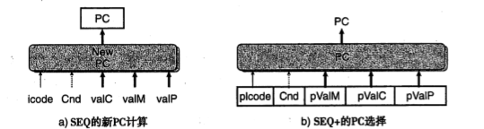
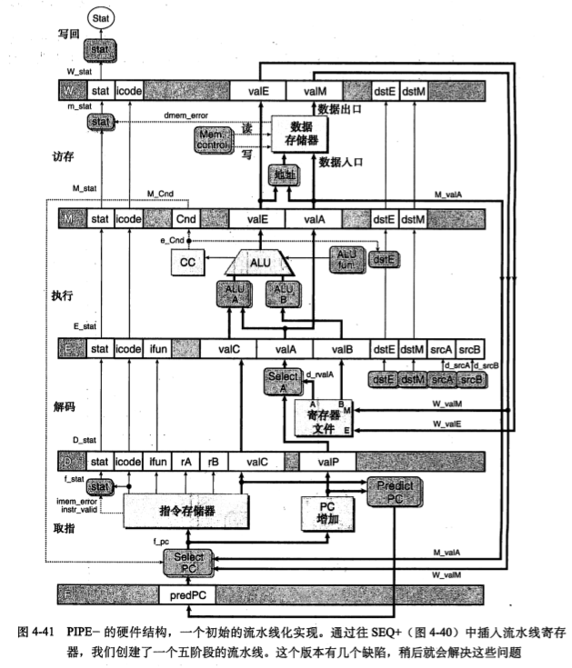
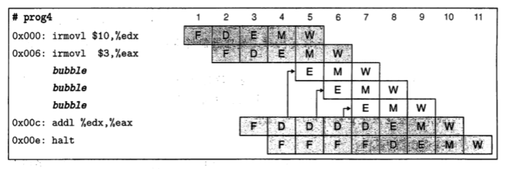

Y86(一个玩具)
定义Y86指令集只处理四字节的数据

- 将movl拆分成四个指令，显示指定源和目的。i表示立即数，r表示寄存器，m表示存储器。
- OPl包含四个整数操作，分别是addl,subl,andl,xorl
- 三个条件码ZF、SF和OF
- 7个跳转指令jmp、jle、jl、je、jne、jge、jg
- 6个条件传送cmovle、cmovl、cmove、cmovne、cmovge、cmovg（属于rrmovl类）
- call、ret、pushl、popl不变
- halt相当于X86里的hlt，会直接导致处理器暂停
指令集模拟器YIS
HCL
位级电路->字级电路
多路复用电路
ALU（算术单元）：根据输入做一次算术运算
寄存器
寄存器操作时，输出会一直保存在当前寄存器状态上，直到时钟信号上升。

这是一个典型的寄存器文件，这样一个多端口随机访问存储器允许同时进行多个读写操作。向寄存器文件写入字是由时钟信号控制的。

数据存储器只有一个输入输出。
现实中更为复杂
顺序实现
一个指令的各个阶段
- 取指 fetch
- 解码 decode
- 执行 execute（包括计算和设置条件码）
- 访存 memory
- 写回 write back
- 更新PC PC update，将PC设置成下一条指令的地址
大多数指令比较简单，最难实现的应该是pushl和popl（举例如下）
| 阶段 | call Dest | ret |
|---|---|---|
| fetch | icode: ifun <-M[PC] valC<-M[PC+1] valP<-PC+5 |
icode: ifun <-M[PC] valP<-PC+1 |
| decode | valB<-R[%esp] | valA<-R[%esp] valB<-R[%esp] |
| execute | valE<-valB-4 | valE<-valB+4 |
| memory | M[valE]<-valP | valM<-M[valA] |
| write back | R[%esp]<-valE | R[%esp]<-valE |
| PC update | PC<-valC | PC<-valM |
| 阶段 | pushl rA | popl rA |
|---|---|---|
| fetch | icode: ifun <-M[PC] rA:rB<-M[PC+1] |
icode: ifun <-M[PC] rA:rB<-M[PC+1] |
| decode | valP<-PC+2 | valP<-PC+2 |
| execute | valA<-R[rA] valB<-R[%esp] |
valA<-R[%esp] valB<-R[%esp] |
| memory | valE<-valB+(-4) | valE<-valB+4 |
| write back | M[valE]<-valA R[%esp]<-valE |
valM<-M[valA] R[%esp]<-valE R[rA]<-valM |
| PC update | PC<-valP | PC<-valP |
一种顺序实现如下

SEQ实现
所使用的常数如下（除了指令之外还包括了状态码）

取指阶段
- instr_valid：合法指令
- need_regids：包括寄存器指示符
- need_valC：包含常数

增加器产生值p+1+need_rigids+4*need_valC
译码和写回阶段
执行阶段

访存阶段

更新PC阶段
HCL描述如下
1 | int new_pc = [ |
流水线
SEQ的问题在于每个单元只在整个时钟周期的一部分时间里被使用
理想流水线：划分成n个相互独立的周期，每个阶段需要的时间是原来的1/n，其他因素：
- 不一致的划分
- 流水线过深，反而降低收益（寄存器的延迟）
现代处理器采用15或更深的流水线，因而需要划分指令的执行减小延迟、设计更好的流水线寄存器、设计时钟传播网络
带反馈的流水线：处理有数据相关的相邻指令
Y86流水线的实现
SEQ+：重新安排计算阶段
PC计算移到了时钟周期开始

插入流水线寄存器

寄存器按以下方式标号
- F 保存计数器的预测值
- D 保存指令信息
- E 保存指令和寄存器文件读出的值
- M 保存执行指令的结果
- W 提供计算出来的值，提供返回地址
预测下一个PC
除了条件转移指令和ret之外，我们能够根据取指信息确定下一条指令地址。
这里分支预测总是预测选择了条件分支，预测PC为valC。 这种预测成功率约为60%。其他还有根据分支地址高低进行预测（分支地址低则预测选择分支），成功率约为65%，这种改进源自循环是由后向分支结束这一事实。
ret只是简单地暂停处理新指令。大多数程序可以利用栈顶的值作为预测的返回值。
数据冒险
加入暂停（nop）自动产生的nop指令为气泡（bubble）

但这会导致流水线暂停过长，降低整体吞吐量。
解决方法是将要写的值传到流水线寄存器E作为源操作数。在译码阶段发现有写回阶段对寄存器未进行的写，则用这个值作为源操作数。
这样就有5个转发源e_valE,m_valM,M_valE,W_valM,W_valE
有两个不同的转发目的valA, valB
在结构中就是加入Sel+Fwd A和Fwd B的模块更新valA和valB
加载互锁和转发技术结合起来处理所有可能的数据冒险
异常处理
没有实际的异常指令
异常处理的几个细节
- 多条指令引起异常
- 分支预测错误取消了异常指令
- 异常指令之后的指令改变了部分状态
当处于访存或写回阶段中的指令导致异常时，流线控制逻辑必须禁止更新条件码或数据存储器。
PIPE各阶段
取指：增加了f_pred
译码和写回：使用sel+fwd A和fwd B
五个转发源的顺序很重要，应该是e_dstE, m_valM, M_valE, W_valM, W_valE
执行阶段
访存阶段
控制逻辑
处理4种控制
ret
ret后加入三个bubble
但是取指阶段没有办法插入bubble，实际处理中ret后加入三个rrmovl+bubble效果等价
加载/使用冒险
气泡+转发
预测错误的分支
在下一个周期译码和执行阶段加入bubble 指令排除预测错误的指令
异常
我们可以由此产生各个流水线控制信号的HCL描述
遇到加载/使用冒险和ret指令组合时，寄存器D不应该插入气泡。
性能分析
其中C_b是气泡数，C_i是指令数，分加载/使用、预测错误、ret三种情况考虑。
未完成工作
- 多周期指令：计算单元做不同运算所需时间不同
- 存储系统的接口